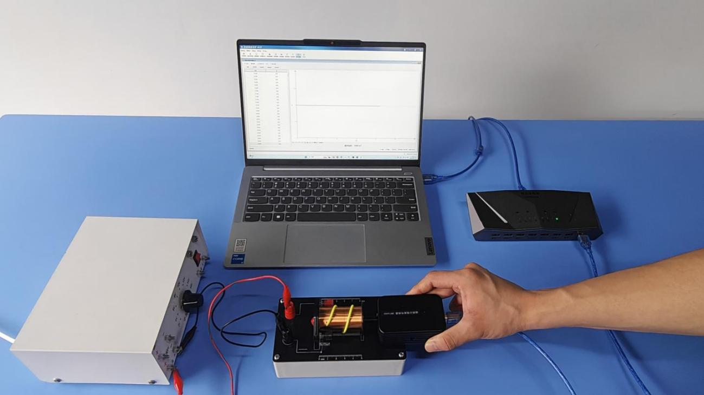
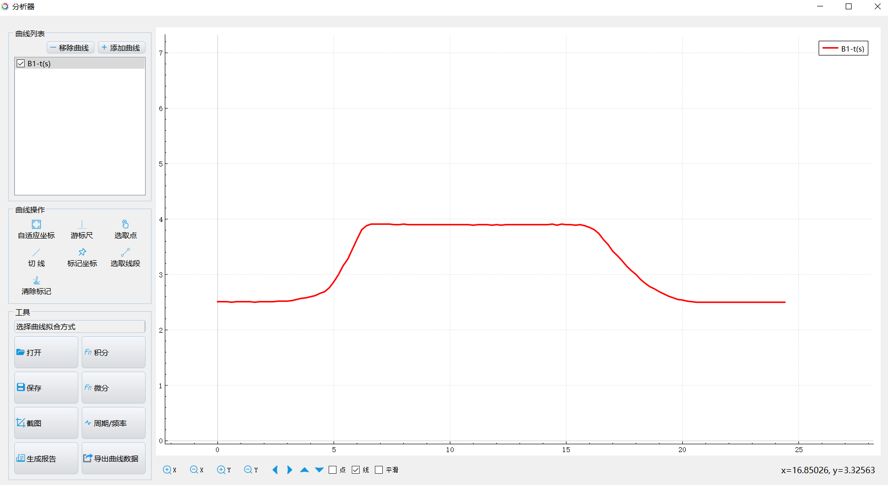

实验四十五 通电螺线管的磁感强度测量
【实验目的】
观察匀强磁场螺线管内部产生匀强磁场的现象，总结通电螺线管内部产生匀强磁场的条件。
【实验原理】
当通电螺线管具有一定的长径比的时候，其内部磁场趋于一个恒定值，即各个位置的磁感应强度相等，形成一定范围内的匀强磁场。这种螺线管称为匀强磁场螺线管，其管内沿轴线上的磁感应强度分布曲线呈现出较大范围的“平顶”现象。
【实验器材】
数据采集器、磁感应强度传感器、螺线管实验器、学生电源、计算机等。
【实验装置】

【实验操作步骤】
1.搭建好实验环境，确保磁感应强度传感器的探管与螺线管的轴心重合；
2.打开实验数据分析软件，连接好数据采集器和磁感应强度传感器；
3.打开“表格视图”，添加递增变量列x，用于记录磁感应强度传感器探管前沿的位置；
4.将磁感应强度传感器探管前沿置于螺线管端口外1cm处，通过传感器窗口的“调零”将磁感应器调零；
5.接通6V学生电源（或电池组），调节电源正负极，使磁传感器的读数为正值；
6.沿实验座架将磁传感器探管插入螺线管，每插入0.5cm，并点击一次“采集”按钮，记录对应的磁感应强度值与距离；
7.记录多组数据后，点击“数据分析”，做出通电螺线管轴线上的磁感应强度分布图；
8.选出平顶现象比较明显的图线，记录螺线管的长度、匝数，计算其长径比。
9.用其他螺线管，重复实验，总结匀强磁场产生的条件。

螺线管内部磁感应强度曲线
【注意事项】
实验时通过螺线管的电流不能太大，否则会损坏螺线管。
【自由探究】
你能自己动手绕制能产生匀强磁场的螺线管吗？动手试一试，再用本实验的方法检验你绕制的螺线管，看它是否能产生匀强磁场。最后总结螺线管产生匀强磁场需要满足的条件。